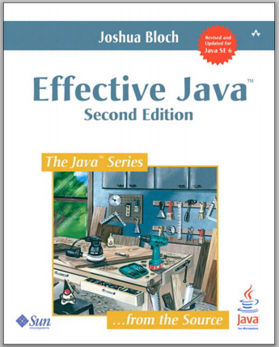
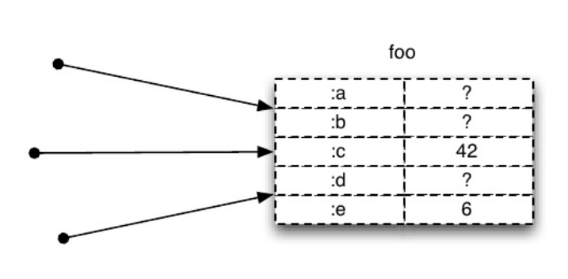
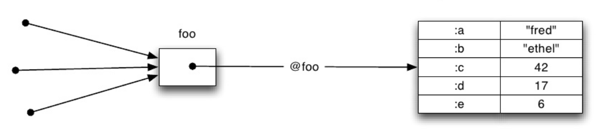
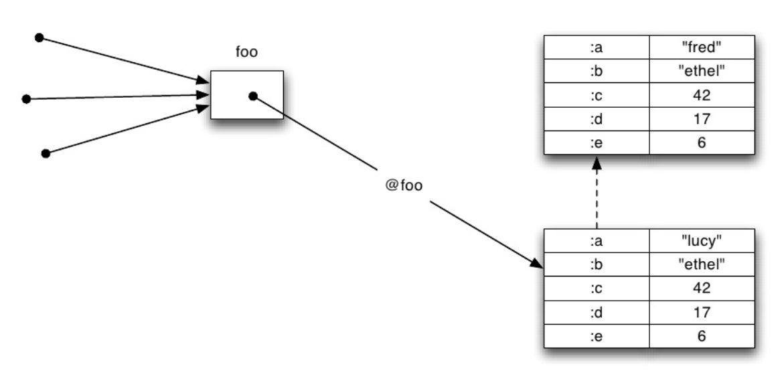

Simple. Clojure.
Ideas y filosofía detrás del lenguaje Clojure
¿Cual es el principal problema técnico
en el desarrollo de Software a gran escala?
Complejidad
-- Dijkstra
“El arte de la programación es el arte de organizar complejidad”
-- Tony Hoare“Dos maneras de hacer software:
Una es hacerlo tan simple que obviamente no habrá deficiencias,
otra es hacerlo tan complicado que no hay deficiencias obvias...”
"Out of the Tar Pit" paper, 2006
By Ben Moseley & Peter Marks
“...es la principal dificultad en el desarrollo exitoso de software...”
Complejidad
Esencial
Accidental
public class User { String id; String username; String displayName;}// ACCIDENTAL COMPLEXITY follows... // Constructor // Setters // Getters // equals() // hashCode() // clone() ? }COMPLEJO
no es lo opuesto de
FÁCIL
http://www.infoq.com/presentations/Simple-Made-EasySimple vs. Complejo
- conceptos objetivos -
Fácil vs. Difícil
- conceptos subjetivos -
主観的 - 주관적 - غير موضوعي
¿Qué tiene que ver esto con
Clojure?

-- Rich Hickey
“Reducir complejidad accidental es un principal foco de Clojure”
Simplicidad
Lispy - Funcional - Datos - Inmutabilidad
Focalización
Interactivo - Abstracción - Macros
Practicidad
JVM, JavaScript, CLR - Perf.
Aprenda Clojure en 5 minutos
Aprenda Clojure en 5 minutos
Datos atómicos
true false ;; booleans 0 123 3.14 22/3 ;; Numbers "JavaConf 2014" ;; Strings \a \z ;; Chars user-name ;; Symbols :key1 ;; keywordsDatos compuestos
[1 2 "tres"] ;; Vector(1 2 "tres") ;; List{:key1 "value1", :key2 "value2" } ;; Map#{1 2 3 4 5} ;; Set ;; Todas pueden anidarseSintaxis
Las estructuras de datos son el código
La "sintaxis" es la interpretación de esas estructuras
Reglas de Evaluación
Todo es evaluación de Expresiones
(no hay sentencias)
Los tipos de datos que vimos evaluan a sí mismos
Excepción: Symbols y Lists
Symbols
Se evaluan al dato al que hacen referencia
pi user-name concatListas
Son evaluadas como operaciones
(operation arg1 arg2 arg3)(println "Hello World!")Tres tipos de Operaciones:
Funciones
Op. "Especiales"
Macros
Operaciones: Funciones
(function-name arg1 arg2 arg3)Eager evaluation: Primero se evalua cada uno de los argumentos, luego se aplica la función
(println "Hello " user-name) (+ 1 2 3 4 5) (concat [1 2 3] (range 4 10))Operaciones: "Especiales"
Primitivas sobre las que se basan el resto de las operaciones
Operaciones que no pueden implementarse como funciones
Evaluación de args es particular para cada operación especial
(def pi 3.1415) (def user-name "joe")(if (baja-altura? alt) (abrir-paracaidas!) (log "Sigamos cayendo..."))
def if fn let do quote var loop
set! recur throw try catchOperaciones: Macros
Funciones que ejecutan en tiempo de compilación
Transforman expresiones
Permiten extender el languaje
Todo el poder del lenguage está disponible
Muchas operaciones de la librería estándar son macros
defn if-not and or when when-not ...(and a b);; Se expande a: (if a b a)(and a b c);; se expande a: (if a (and b c) a)(if a (if b c b) a)Ej. Liberar recursos (Java)
InputStream fis = null; try { fis = new FileInputStream(src) // bla bla... } finally { if (fis != null) { try { fis.close(); } catch (IOException e) { e.printStackTrace(); } } }Ej. Liberar recursos (Java 7)
// Se puede escribir así: try (InputStream fis = new FileInputStream(src)) { // bla bla... }Ej. Liberar recursos (Clojure)
(with-open [w (io/writer out-file)] (write-data! w));; Se expande a... (aprox.) (let [w (io/writer out-file)] (try (write-data! w) (finally (. w close))))Ej. Macros para definir API REST
(defroutes secured-routes (GET "/task-filters" [] (response (task-filters/fetch-all))) (POST "/task-filters" request (response (task-filters/insert (:body request) (auth/current-user request)))) (GET "/task-filters/:id" [id] (response (task-filters/ensure-by-id id))) (DELETE "/task-filters/:id" [id] (response (task-filters/delete-by-id! id))))Resumiendo
;; Tipos básicos 123 "hola" :key ;; Collecciones [1 2 3 4 5] {:key1 "value1" } ;; Listas evaluadas como operaciones (def my-value 1) ;; special form (concat arg1 arg2 arg3) ;; function (and exp1 exp2) ;; macro
<DEMO> Funciones vs. Datos
En Clojure: Funciones y Datos separados
-- Alan Perlis
“Mejor tener 100 funciones operando sobre UNA estructura de datos, que 10 funciones sobre 10 estructuras de datos”
Homogeneidad
Funciones estándar de Clojure para manipular estructuras y sequencias de cualquier API
Más reutilización de código y de conocimiento
Que funciones y datos de distintas librerías puedan interoperar
Anti-ejemplo: Apache Commons CSV
Iterable records = CSVFormat.EXCEL.parse(in);http://commons.apache.org/proper/commons-csv/user-guide.htmlfor (CSVRecord record : records) { String lastName = record.get("Last Name"); String firstName = record.get("First Name"); ... }Componer > Reutilizar
Polimorfismo: "A la carta"
Multimethods (multiple dispatch)
Protocols
Protocols
Grupo de funciones sin implementación
Diferentes impl. para cada tipo
La impl. puede estar separada de la definición del tipo
¿Y si parse-csv devuelve JodaTime DateTime
y to-json no conoce de JodaTime?
"Estado"
“...Estado [mutable] es la principal causa de complejidad...”
-- "Out of the Tarpit" paper, 2006
"Estado" en Clojure
Funciones puras y "Transparencia Referencial"
Inmutabilidad
Estado - Valor - Identidad
Funciones Puras
El resultado de una función pura depende sólo de sus argumentos
Una función pura no tiene efectos secundarios
Transparencia Referencial
Fácil razonar acerca del código
Fácil de probar
Fácil de experimentar
Fácil de reutilizar y componer
Se puede cachear el resultado
Menos dependencias implícitas entre funciones
(expired? at-date invoice)¿Y si expired? modifica al invoice?
Deja de ser pura. Perdemos transparencia referencial :-(
¿Y si invoice y at-date fuesen inmutables?
Inmutabilidad
¡Mencionada más de 140 veces!
(total de 350 páginas)
Inmutabilidad
¡En Clojure todos los valores son inmutables!
Incluyendo collecciones, con anidamiento
También los tipos definidos por el usuario (defrecord )
Las secuencias "lazy" también son inmutables
Excepción: objetos mutables de un API Java
En Java (típico en OO):
Referencias directas a objetos mutables
Identidad y Valor van juntos
El estado puede cambiar en cualquier momento
En Clojure:
Referencias indirectas a valores inmutables
Separa Identidad del Valor
Los Valores no cambian
De-referencia explícita para obtener un Valor
Cambio de estado: Atómico
Identidad: sucesión de Valores inmutables
No bloquea otros "readers"
No afecta valores anteriores
Observers ("Listeners")
(def listener-fns (atom [])) (defn subscribe [fn] (swap! listener-fns conj fn)) (defn fire [value] (doseq [listener @listener-fns] (listener value)))Thread-safe
fire no bloquea a subscribe
No ConcurrentModificationException
Inmutabilidad, Ventajas:
Nos devuelve transparencia referencial
"Thread-safe" - Concurrencia sin locks
Semántica clara y útil de igualdad
Cualquier dato puede ser "key" de un mapa
...
...Flappy State...
multiple-dispatch - metadata - concurrency refs
core.async - core.logic - pattern matching - Om/React
Datomic - transducers - clara.rules
...
“La Simpleza en una gran virtud, pero requiere mucho trabajo lograrla y educación para apreciarla ...
... la Complejidad vende más!”
Dijkstra
¡Anteojos Hipster!
¡Gracias!